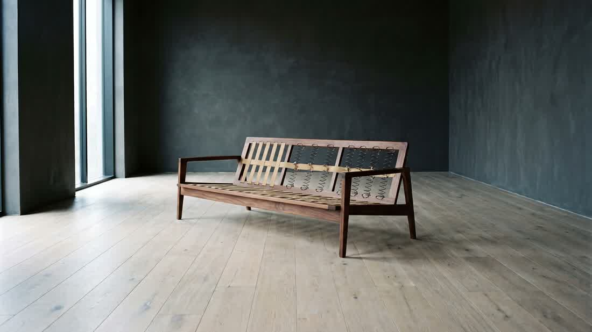
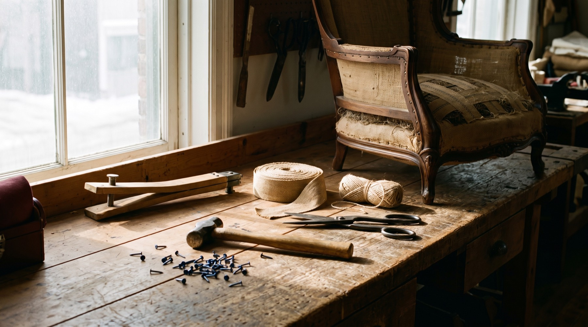
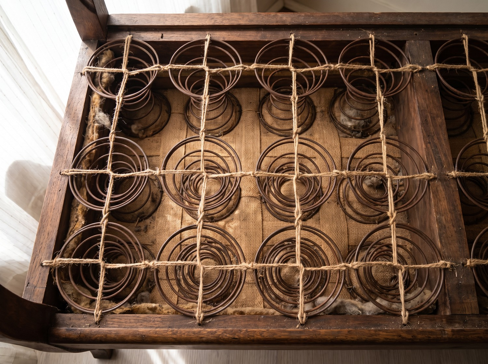

Fauteuils & sofas
La pièce est dégarnie jusqu’à la structure. Sangles, ressorts et bourrage sont refaits avant la pose du tissu.

Rembourrage · Restauration · Cannage
On ouvre la structure avant de parler de tissu.
Rembourrage complet, restauration de meubles anciens et cannage tissé à la main, au 7498, rue Saint-Hubert depuis 1955. Les estimations se font sur photographies et reviennent le jour ouvrable suivant.
Les délais ci-dessous sont ceux d’une saison ordinaire. Ils s’allongent entre avril et juin, et varient selon ce que la structure révèle une fois la pièce dégarnie.
La pièce est dégarnie jusqu’à la structure. Sangles, ressorts et bourrage sont refaits avant la pose du tissu.
Sangles de jute, crin conservé, ressorts guindés à la main et semences sur les structures d’époque.
Cannage tissé à la main, trou par trou, ou cannage en feuille posé en rainure. Vingt maillages en stock.
Traitées en lot et chiffrées par ensemble. Un tissu performance convient mieux à une salle à manger.
Toute hauteur et toute forme : unie, à cannelures ou capitonnée, fixée au mur ou au sommier.
Sunbrella et acryliques teints dans la masse, coupés au gabarit, fil de qualité marine.
Restaurants, cliniques et hôtellerie. Chiffré au pied linéaire, cotes d’abrasion et d’ignifugation vérifiées.
Traverses fendues, blocs de coin remplacés, sièges affaissés, mécanismes d’inclinaison entretenus.
Le bois apparent est décapé, poncé, teint et refini : vernis, huile ou cire, selon la pièce.
On vient chercher la pièce et on la rapporte, sur l’île de Montréal et en proche banlieue.
Une pièce qui arrive est dégarnie jusqu’à la structure. Tout ce qui se trouve sous le tissu est inspecté avant qu’une seule verge soit coupée.
Les joints lâches sont recollés et chevillés, les sangles remplacées et tendues à la main, les ressorts reguindés à huit nœuds chacun. Le tissu ne monte qu’ensuite.
Une estimation sérieuse suppose donc d’avoir vu la pièce : le travail réel n’apparaît qu’une fois la structure à nu.


Trois photographies suffisent pour commencer : la pièce au complet, une vue rapprochée de l’usure, et une main dans le cadre pour l’échelle. Elles peuvent être envoyées par texto, WhatsApp ou courriel, et un chiffre écrit suit le jour ouvrable suivant.
| Lundi | 9 h – 17 h |
| Mardi | 9 h – 17 h |
| Mercredi | 9 h – 17 h |
| Jeudi | 9 h – 17 h |
| Vendredi | 9 h – 17 h |
| Samedi | 10 h – 17 h |
| Dimanche | Fermé |
Un appel avant un long déplacement est prudent : une livraison peut fermer l’atelier une heure.